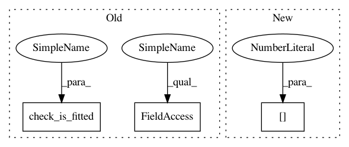

ac7081c510fc2c27b1bef002dfefc9f3854e2c9a,sklearn/metrics/_plot/roc_curve.py,,plot_roc_curve,#Any#Any#Any#Any#Any#Any#Any#Any#,107
Before Change
>>> plt.show() // doctest: +SKIP
check_matplotlib_support("plot_roc_curve")
check_is_fitted(estimator)
classification_error = ("{} should be a binary classifer".format(
estimator.__class__.__name__))
if is_classifier(estimator):
if len(estimator.classes_) != 2:
raise ValueError(classification_error)
pos_label = estimator.classes_[1]
else:
After Change
y_pred = prediction_method(X)
if y_pred.ndim != 1:
if y_pred.shape[1] != 2:
raise ValueError(classification_error)
else:
y_pred = y_pred[:, 1]
In pattern: SUPERPATTERN
Frequency: 3
Non-data size: 3
Instances
Project Name: scikit-learn/scikit-learn
Commit Name: ac7081c510fc2c27b1bef002dfefc9f3854e2c9a
Time: 2019-11-12
Author: qinhanmin2005@sina.com
File Name: sklearn/metrics/_plot/roc_curve.py
Class Name:
Method Name: plot_roc_curve
Project Name: scikit-learn/scikit-learn
Commit Name: ac7081c510fc2c27b1bef002dfefc9f3854e2c9a
Time: 2019-11-12
Author: qinhanmin2005@sina.com
File Name: sklearn/metrics/_plot/precision_recall_curve.py
Class Name:
Method Name: plot_precision_recall_curve
Project Name: ysig/GraKeL
Commit Name: 2b8a7f6cdf259893a99f6923a42388c5495fb18d
Time: 2017-11-16
Author: y.siglidis@gmail.com
File Name: grakel/graph_kernels.py
Class Name: GraphKernel
Method Name: transform